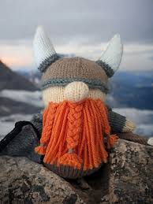
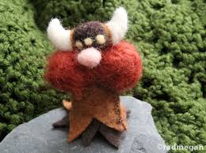
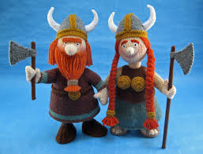

Here are just some of our fearsest knitted champions:
-

-

-

-

Centuries of raiding and pillaging have filled our hearts with glee. Yet, braving the sea remains a miserable ordeal - waves, storms, and the occasional seasick warrior. Thankfully, the legendary Ragnar Lothbrok once stumbled upon the glorious pastime of knitting, a craft that kept his hands busy and his sanity intact through the fiercest tempests. Ever since, we've proudly upheld his tradition, producing knitted treasures as fine as our battle axes - though considerably less dangerous
I'm beyond impressed with these knitted Viking toys! The craftsmanship is outstanding—every detail from the tiny helmets to the braided beards shows so much care and creativity. They're soft, durable, and perfect both as collectibles and as gifts for kids. Shipping was quick, and the packaging made it feel extra special. I'll definitely be coming back for more—these are truly unique treasures!
Sign up for our newsletter to stay updated on the latest knitted Viking news and exclusive offers!